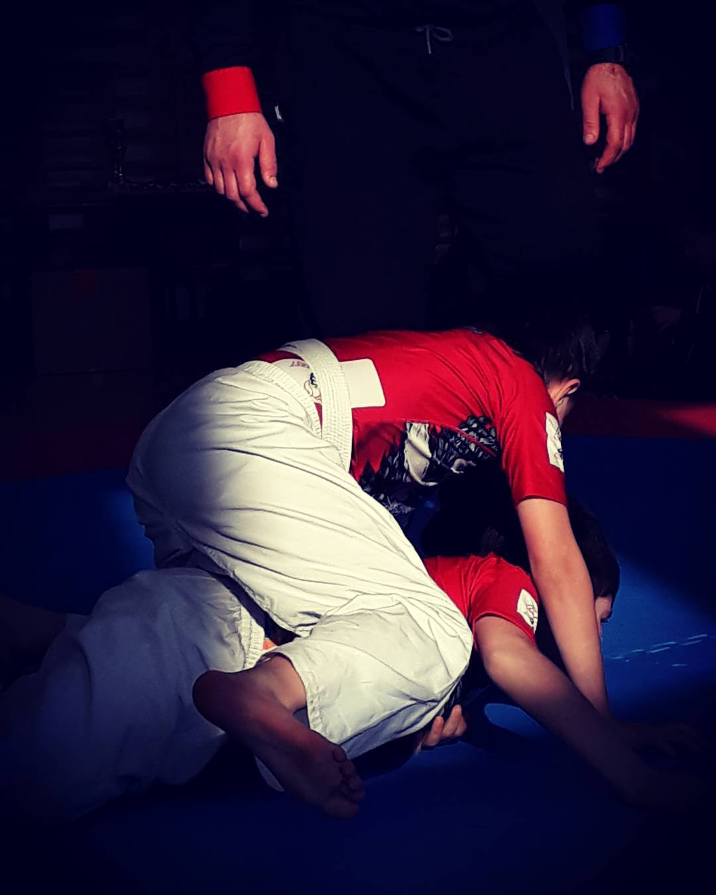
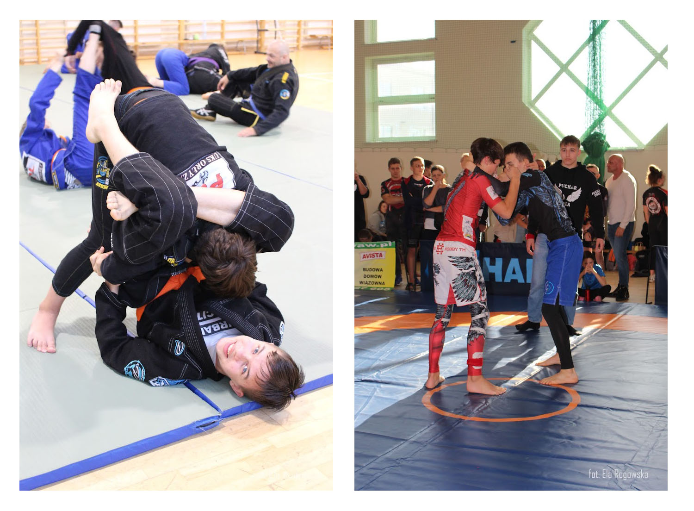

Co to jest BJJ?
Jest to sztuka walki, która pochodzi od judo i zapasów. Polega na obaleniu przeciwnika, uzyskaniu nad nim całkowitej kontroli przez zablokowaniu jego ruchów. Aby to zrobić stosuje się dźwignie, duszenia i chwyty unieruchamiające.
Nazwa dyscypliny - Brazylijskie jui-jitsu (w skrócie: BJJ) pochodzi od tradycyjnej japońskiej sztuki walki jui-jitsu. W japońskim jui-jitsu dozwolony jest bogaty repertuar ciosów, w tym uderzeń i kopnięć, których w brazylijskim jui-jitsu nie ma. Sama technika BJJ wywodzi się od łagodniejszej odmiany jui-jitsu, czyli judo. Po tym, jak judo stało się popularne w Brazylii, mieszkańcy tego kraju zaczęli modyfikować ten styl walki dodając elementy znane z zapasów. Brazylijskie jiu-jitsu uznawane jest za najskuteczniejszą sztukę walki wręcz bez użycia broni-bardzo dobrze sprawdza się przy obezwładnianiu przeciwnika pomimo, że nie używa się w niej bezpośrednich ciosów. Poniżej wywiad z trenerem jednego z warszawskich klubów BJJ, w którym tłumaczy on podstawowe zagadnienia tej sztuki walki.
Często stosuje się dosiad, czyli siedzenie okrakiem na leżącym przeciwniku, podcinanie, podduszanie, dźwignie na kończyny. Najpopularniejszą techniką kończącą i jednocześnie moją ulubioną jest balacha. Co nieco o tej technice w poniższym filmie:

W Brazylijskim Jiu-Jitsu walczyć można w dwóch formułach: GI (w kimonach) i NO GI (w obcisłych strojach, przylegających do ciała strojach).
Formuła GI (kimona) wymaga użycia pasa, którym przewiązuje się bluzę. Kolor pasa odpowiada stopniowi zaawansowania zawodnika. W BJJ kolejne pasy przyznawane są przez trenera, który decyduje czy jego podopieczny osiągnął już kolejny poziom zaawansowania. Dzieci i dorośli mają różne kolory pasów.
 Dorośli startują z poziomu pasa białego, aż do czarnego. Poniżej symbolika poszczególnych kolorów.
Dorośli startują z poziomu pasa białego, aż do czarnego. Poniżej symbolika poszczególnych kolorów.
Pas biały - pas odkrywania i przeżycia. Jako biały pas uczysz się podstawowych technik, nabywasz odruchy, koncentrujesz się na ucieczkach, defensywie i przetrwaniu z dołu.
Pas niebieski
- pas eksperymentów. Na tym poziomie znasz podstawowe techniki i pozycje. Uczysz się zaawansowanych odmian, eksperymentujesz i szukasz swoich ulubionych technik i poddań. Odkrywasz swój styl. IBJJF zaleca bycie niebieskim pasem przez co najmniej 2 lata.
Pas purpurowy
- pas rozwoju. Specjalizujesz się w swoich ulubionych technikach, ale to także czas na trenowanie tych, które nie stanowią elementów Twojej gry. IBJJF zaleca bycie purpurowym pasem przez co najmniej 18 miesięcy.
Pas brązowy
- pas wyrafinowania. Już znasz swoje umiejętności i udoskonalasz każdą technikę. Rozwijasz dojścia do ulubionych pozycji, stosujesz zaawansowane strategie. IBJJF zaleca bycie brązowym pasem przez co najmniej rok.
Pas czarny
- pas mistrzostwa. To dowód na szeroką wiedzę na temat technik BJJ, ich podstawowych i zaawansowanych odmian oraz na umiejętność przekazywania tej wiedzy w praktyce.
 W związku z tym, że droga do zdobycia powyższych pasów jest długa i wymaga nie tylko dużej pracy ale też cierpliwości dzieciom, aby ich nie zniechęcić długim czekaniem i motywować do dalszej pracy, pasy przyznaje się na trochę innych zasadach. Obok rozkład pasów przyznawanych zawodnikom w wieku 4-15 lat.
W związku z tym, że droga do zdobycia powyższych pasów jest długa i wymaga nie tylko dużej pracy ale też cierpliwości dzieciom, aby ich nie zniechęcić długim czekaniem i motywować do dalszej pracy, pasy przyznaje się na trochę innych zasadach. Obok rozkład pasów przyznawanych zawodnikom w wieku 4-15 lat.
Na koniec trochę praktycznej wiedzy dotyczącej pasa w BJJ, czyli krótki kurs jego wiązania 😉